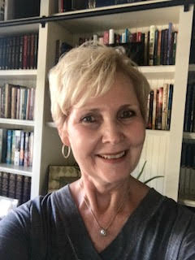

Speaker: Rhonda Rock
Rhonda was called into ministry after being dramatically healed at the Brownsville Outpouring in Pensacola, Florida in 1997.
Rhonda battled depression and severe food intolerance and for twelve years. While interpreting for a revival service, she was miraculously healed and called to share His healing Word!
Rhonda is a credentialed minister with the Assemblies of God and as an evangelist preaches in revival services, retreats, and women’s ministry conferences across the nation. She also has been a Oklahoma state certified Interpreter for the Deaf for over 35 years.